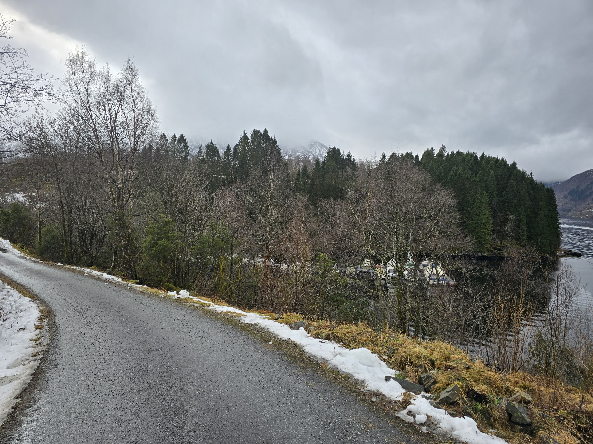
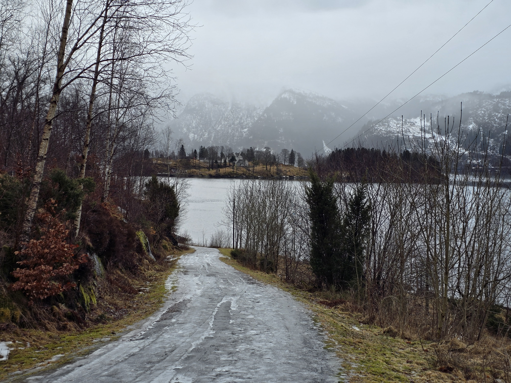

Neskaivegen: Frå den kongelege postvegen til turistporten i Bruvik
Gå nedover Neskaivegen – ruta der kongelege kurerar reid for 300 år sidan, og der varer vart frakta ned til snøkvite dampbåtar for 100 år sidan. I dag er den gamle kaien ei roleg hamn og startpunktet for di reise inn i den ville naturen i Sørfjorden. Denne gata er ikkje berre ei topografisk linje på kartet over Osterøy; ho er eit historisk blodomløp som i hundreår har definert økonomien, klassehierarkiet og sambandet bygda hadde med omverda.
1. Topografi og batymetrisk determinisme
Den historiske kjernen i Bruvik vart forma rundt to funksjonelle polar: den åndelege (Bruvik kyrkje) og den kommersielle (Neset). Den romlege delinga var strengt diktert av fysikken til fjorden og botntopografien.
Kyrkjegrunnen: Farvatnet ved kyrkja hadde ein samansett, steinete botn og kritisk lita djupn. Det var utelukkande eigna for flatbotna trebåtar (kyrkjebåtar) som kyrkjelyden nytta til å krysse fjorden.
Djupvassneset: Neset derimot, hadde eit bratt fall i kontinentalsokkelen (marbakke), noko som gjorde det mogleg for djuptgåande fartøy å fortøye trygt. Neskaivegen vart prosjektert av ingeniørar som ein naudsynt gravitasjonskorridor som batt det agrare platået saman med det einaste punktet som var eigna for ei tung hamn.
2. Infrastruktur under den dansk-norske unionen (1700–1800-talet)
Lenge før den industrielle revolusjonen og dampmaskinene, fungerte Neskaivegen som eit strategisk segment for den nasjonale kommunikasjonen til Kongeriket.
Postbønder: Tidleg på 1700-talet baserte den statlege logistikken i Noreg seg på pliktarbeid frå lokalbefolkninga. Statsarkiva dokumenterer verksemda til Mons Sjursson frå Indre Bruvik, som var ansvarleg for transitten av den kongelege posten over Sørfjorden frå 1706 til 1710. Gata fungerte som nullpunkt for kurerstafettane.
Gjestgjevarmonopolet: I 1789 kommersialiserte lensmann Fougstad transittpotensialet til lokasjonen. Han fekk ein eksklusiv kongeleg bevilling til å drive gjestgjevarstad. Neset vart eit kommersielt knutepunkt der vegane til regionale embetsmenn, bergenskjøpmenn og høgare geistlege kryssast.

3. Ingeniørkunst og transitt i Vossebane-epoken (1877–1883)
Den fundamentale økonomiske transformasjonen av staden fann stad på slutten av 1800-talet under bygginga av jernbanelina Bergen–Voss (Vossebanen) på motsett side av fjorden.
Administrasjonssenter (Fastinghuset): Neset vart vald som hovudleir for leiinga av det kolossale anleggsarbeidet. Her vart det reist ein toetasjes administrasjonsbygning, kalla opp etter hovudingeniøren for infrastrukturprosjektet, Johan Jacob Fasting.
Logistisk overbelasting: Kaien vart den viktigaste omlastingsbasen i regionen. Gjennom Neskaivegen vart det transportert tusenvis av tonn med byggjestein, stålskinner og tømmer. Gategrunnen vart radikalt forsterka med støttemurar for å tole trafikk av tunge hestevogner døgnet rundt.
4. Dampbåtmonopol og det sosiale teateret på hamna (1900–1960-talet)
På 1900-talet vart farvatnet fullstendig monopolisert av Indre Nordhordland Dampbåtlag (INDL). Vatnet erstatta asfalten, og Neskaivegen vart den viktigaste økonomiske pulsåra i kommunen.
Agrar eksport: Kvar dag ved daggry frakta bøndene i Bruvik stablar av tunge mjølkespann i metall, levande husdyr og produkt frå kalkbrota på Skaftå ned til hamna for eksport til marknadene i Bergen.
Leviatanen MS Bruvik (1949): Høgdepunktet i skipsfartsepoken kom med sjøsetjinga av eit 42 meter langt stålskip, kalla opp etter bygda. Fartøyet hadde ein tonnasje på 307 bruttoregistertonn og tok om bord opptil 280 passasjerar.
Klassestratifisering: Kaien fungerte som ei sone med eit strengt hierarki. Kapteinane i gullvinklar forlet ikkje brua, matrosar i arbeidsbusserull tok imot tjørebreidde fortøyingar, medan lokalbefolkninga nytta skipsankomsten til å demonstrere sosial status. Den mobile postlugaren om bord på skipet sikra sirkulasjon av økonomi og presse.

5. Den visuelle korridoren for sosial isolasjon
Kaien på Neskaivegen hadde ein unik visuell dominant: Han var orientert rett mot Ulfsnesøy (Olsnesøyna). Mens innbyggjarane i Bruvik stod i vasskanten og sende varer til den frie marknaden i Bergen, kunne dei kvar dag observere kolonistiftingsøya, dit marginaliserte og vanskelegstilte gutar frå heile Vestlandet vart sende. Denne arkitektoniske og funksjonelle dissonansen mellom den kommersielle fridomen på hamna og den straffande isolasjonen på øya står igjen som ein mektig historisk markør for lokasjonen.
Neskaivegen: Від королівського поштового тракту до туристичних воріт Брувіка
Спустіться вулицею Neskaivegen — маршрутом, яким 300 років тому скакали королівські кур'єри, а 100 років тому звозили товари до білосніжних пароплавів. Сьогодні старий причал — це тиха гавань і стартова точка для вашого занурення в дику природу Сьорфьорда. Ця вулиця не просто топографічна лінія на карті острова Остерей; це історична кровоносна система, що століттями визначала економіку, класову ієрархію та зв'язок села із зовнішнім світом.
1. Топографія та батиметричний детермінізм
Історичне ядро Брувіка сформувалося навколо двох функціональних полюсів: духовного (Bruvik kyrkje) та комерційного (Neset). Просторовий поділ був жорстко продиктований фізикою фіорду та рельєфом дна.
Церковна мілина: Акваторія, що прилягає до храму, мала складне кам'янисте дно та критично малу глибину. Вона була придатною виключно для плоскодонних дерев'яних човнів (kyrkjebåtar), на яких парафіяни перетинали фіорд.
Глибоководний мис: Мис Neset, навпаки, мав різкий обрив континентального шельфу, що дозволяло безпечно швартуватися суднам із глибокою осадкою. Neskaivegen була спроєктована інженерами як вимушений гравітаційний коридор, що пов'язував аграрне плато з єдиною придатною для важкого порту точкою.
2. Інфраструктура Дансько-Норвезької унії (XVIII–XIX ст.)
Задовго до індустріальної революції та парових машин Neskaivegen функціонувала як стратегічний сегмент національної комунікації Королівства.
Інститут Postbønder (Поштові фермери): На початку 1700-х років державна логістика Норвегії спиралася на обов'язкову службу місцевого населення. Державні архіви фіксують діяльність Монса Шурссона (Mons Sjursson) з Індре-Брувіка, який відповідав за транзит королівської пошти через Сьорфьорд з 1706 до 1710 року. Вулиця слугувала нульовим кілометром для кур'єрських естафет.
Монополія на гостинність: У 1789 році ленсман (шериф) Фоугстад монетизував транзитний потенціал локації. Він отримав від корони ексклюзивну ліцензію на управління заїжджим двором (gjestgjevarstad). Мис перетворився на комерційний хаб, де перетиналися шляхи регіональних чиновників, купців із Бергена та вищого духовенства.
3. Інженерія та транзит епохи Vossebanen (1877–1883)
Фундаментальна економічна трансформація локації відбулася наприкінці XIX століття під час будівництва залізничної магістралі Берген–Восс на протилежному березі фіорду.
Адміністративний центр (Fastinghuset): Мис Neset був обраний базовим табором для керівництва колосальним будівництвом. Тут звели двоповерхову будівлю управління, названу на честь головного інженера інфраструктурного проєкту Йохана Якоба Фастінга.
Логістичне перевантаження: Причал став головною перевалочною базою регіону. Через Neskaivegen транспортувалися тисячі тонн будівельного каменю, сталевих рейок і деревини. Полотно вулиці було радикально укріплено підпірними стінами (støttemurer), щоб витримувати цілодобовий трафік важких гужових возів.
4. Пароплавна монополія та соціальний театр порту (1900–1960-ті)
У XX столітті акваторію повністю монополізувала судноплавна компанія Indre Nordhordland Dampbåtlag (INDL). Вода замінила асфальт, а Neskaivegen стала головною економічною артерією муніципалітету.
Аграрний експорт: Щодня на світанку фермери Брувіка спускали до порту штабелі важких металевих молочних бідонів (mjølkespann), живу худобу та продукцію з вапнякових кар'єрів Skaftå для експорту на ринки Бергена.
Левіафан MS Bruvik (1949): Кульмінацією судноплавної ери став запуск 42-метрового сталевого теплохода, названого на честь села. Судно водотоннажністю 307 брутто-реєстрових тонн брало на борт до 280 пасажирів.
Класова стратифікація: Причал функціонував як зона суворої ієрархії. Капітани в золотих шевронах не покидали місток, матроси в робочих робах (busserull) приймали просмолені швартови, а місцеві жителі використовували прибуття судна для демонстрації соціального статусу. Мобільна поштова каюта на борту корабля забезпечувала циркуляцію фінансів і преси.
5. Візуальний коридор соціальної ізоляції
Причал на Neskaivegen мав унікальну візуальну домінанту: він був орієнтований прямо на острів Ulfsnesøy (Olsnesøyna). Стоячи біля кромки води, жителі Брувіка, які відправляли товари на вільний ринок Бергена, щодня спостерігали за островом-колонією, куди звозили маргіналізованих і важковиховуваних хлопчиків з усього західного узбережжя Норвегії. Цей архітектурний і функціональний дисонанс між комерційною свободою порту та каральною ізоляцією острова є найпотужнішим історичним тригером локації.
Neskaivegen: From the Royal Postal Route to the Tourist Gateway of Bruvik
Descend Neskaivegen—the route where royal couriers rode 300 years ago, and where goods were carted to snow-white steamboats a century ago. Today, the old pier serves as a quiet harbor and the starting point for immersion into the untamed nature of Sørfjorden. This street is not merely a topographical line on the map of Osterøy; it is a historical circulatory system that defined the local economy, class hierarchy, and the village's connection to the outside world for centuries.
1. Topography and Bathymetric Determinism
The historical core of Bruvik formed around two functional poles: the spiritual (Bruvik kyrkje) and the commercial (Neset). This spatial division was strictly dictated by the physics of the fjord and the seabed topography.
The Church Shallows: The waters adjacent to the church featured a complex, rocky bottom and critically shallow depths. This area was exclusively navigable by the flat-bottomed wooden boats (kyrkjebåtar) used by the congregation to cross the fjord.
The Deepwater Promontory: The Neset headland, conversely, featured a sharp drop-off of the continental shelf, allowing deep-draft vessels to moor safely. Neskaivegen was engineered as a necessary gravitational corridor, linking the agrarian plateau to the only viable location for a heavy-capacity port.
2. Infrastructure of the Dano-Norwegian Union (18th–19th Centuries)
Long before the Industrial Revolution and the advent of steam engines, Neskaivegen functioned as a strategic segment of the Kingdom's national communications network.
The Postbønder (Postal Farmers) System: In the early 1700s, Norwegian state logistics relied on the conscripted labor of the local population. State archives document the operations of Mons Sjursson from Indre Bruvik, who was responsible for the transit of royal mail across Sørfjorden from 1706 to 1710. The street served as the zero-kilometer mark for these courier relays.
The Innkeeping Monopoly: In 1789, Lensmann (Sheriff) Fougstad monetized the location's transit potential by securing an exclusive royal license to operate an inn (gjestgjevarstad). Neset evolved into a commercial hub intersecting the routes of regional officials, Bergen merchants, and the high clergy.
3. Engineering and Transit During the Vossebanen Era (1877–1883)
A fundamental economic transformation of the site occurred in the late 19th century during the construction of the Bergen–Voss railway (Vossebanen) on the opposite shore of the fjord.
Administrative Center (Fastinghuset): The Neset headland was selected as the base camp for managing the colossal construction project. A two-story administrative building was erected here, named after the infrastructure project's chief engineer, Johan Jacob Fasting.
Logistical Overload: The pier became the region's primary transshipment base. Thousands of tons of building stone, steel rails, and timber were transported via Neskaivegen. The roadbed was radically reinforced with retaining walls (støttemurer) to withstand round-the-clock traffic from heavy horse-drawn wagons.
4. The Steamboat Monopoly and the Social Theater of the Port (1900s–1960s)
In the 20th century, the waters were completely monopolized by the shipping company Indre Nordhordland Dampbåtlag (INDL). Water replaced asphalt, and Neskaivegen became the municipality's primary economic artery.
Agrarian Exports: Every day at dawn, Bruvik farmers brought down stacks of heavy metal milk cans (mjølkespann), livestock, and products from the Skaftå limestone quarries to the port for export to the Bergen markets.
The Leviathan MS Bruvik (1949): The culmination of the shipping era was the launch of a 42-meter steel motorship named after the village. With a displacement of 307 gross register tons, the vessel could accommodate up to 280 passengers.
Class Stratification: The pier functioned as a zone of strict hierarchy. Captains in gold chevrons remained on the bridge, sailors in work shirts (busserull) handled the tar-coated mooring lines, and locals utilized the ship's arrival to display their social status. A mobile postal cabin onboard facilitated the circulation of finances and the press.
5. The Visual Corridor of Social Isolation
The pier at Neskaivegen possessed a unique visual dominant: it was oriented directly toward the island of Ulfsnesøy (Olsnesøyna). Standing at the water's edge dispatching goods to the free market of Bergen, the residents of Bruvik daily observed the penal colony island, where marginalized and delinquent boys from all over western Norway were exiled. This architectural and functional dissonance—between the commercial freedom of the port and the punitive isolation of the island—remains a powerful historical marker of the location.
Neskaivegen: От королевского почтового тракта до туристических ворот Брувика
Спуститесь по Neskaivegen — маршруту, по которому 300 лет назад скакали королевские курьеры, а 100 лет назад свозились товары к белоснежным пароходам. Сегодня старый причал — это тихая гавань и стартовая точка для вашего погружения в дикую природу Сёрфьорда. Эта улица не просто топографическая линия на карте острова Остерёй; это историческая кровеносная система, веками определявшая экономику, классовую иерархию и связь деревни с внешним миром.
1. Топография и батиметрический детерминизм
Историческое ядро Брувика сформировалось вокруг двух функциональных полюсов: духовного (Bruvik kyrkje) и коммерческого (Neset). Пространственное разделение было жестко продиктовано физикой фьорда и рельефом дна.
Церковная мель: Акватория, прилегающая к храму, обладала сложным каменистым дном и критически малой глубиной. Она была пригодна исключительно для плоскодонных деревянных лодок (kyrkjebåtar), на которых прихожане пересекали фьорд.
Глубоководный мыс: Мыс Neset, напротив, имел резкий обрыв континентального шельфа, что позволяло безопасно швартоваться судам с глубокой осадкой. Neskaivegen была спроектирована инженерами как вынужденный гравитационный коридор, связывающий аграрное плато с единственной пригодной для тяжелого порта точкой.
Задолго до индустриальной революции и паровых машин Neskaivegen функционировала как стратегический сегмент национальной коммуникации Королевства.
Институт Postbønder (Почтовые фермеры): В начале 1700-х годов государственная логистика Норвегии опиралась на обязательную службу местного населения. Государственные архивы фиксируют деятельность Монса Шурссона (Mons Sjursson) из Индре-Брувика, отвечавшего за транзит королевской почты через Сёрфьорд с 1706 по 1710 год. Улица служила нулевым километром для курьерских эстафет.
Монополия на гостеприимство: В 1789 году ленсман (шериф) Фоугстад монетизировал транзитный потенциал локации. Он получил от короны эксклюзивную лицензию на управление постоялым двором (gjestgjevarstad). Мыс превратился в коммерческий хаб, где пересекались пути региональных чиновников, купцов из Бергена и высшего духовенства.
3. Инженерия и транзит эпохи Vossebanen (1877–1883)
Фундаментальная экономическая трансформация локации произошла в конце XIX века во время строительства железнодорожной магистрали Берген–Восс на противоположном берегу фьорда.
Административный центр (Fastinghuset): Мыс Neset был выбран базовым лагерем для руководства колоссальной стройкой. Здесь возвели двухэтажное здание управления, названное в честь главного инженера инфраструктурного проекта Йохана Якоба Фастинга.
Логистическая перегрузка: Причал стал главной перевалочной базой региона. Через Neskaivegen транспортировались тысячи тонн строительного камня, стальных рельсов и древесины. Полотно улицы было радикально укреплено опорными стенами (støttemurer), чтобы выдерживать круглосуточный трафик тяжелых гужевых повозок.
4. Пароходная монополия и социальный театр порта (1900–1960-е)
В XX веке акваторию полностью монополизировала судоходная компания Indre Nordhordland Dampbåtlag (INDL). Вода заменяла асфальт, а Neskaivegen стала главной экономической артерией муниципалитета.
Аграрный экспорт: Ежедневно на рассвете фермеры Брувика спускали к порту штабеля тяжелых металлических молочных бидонов (mjølkespann), живой скот и продукцию с известняковых карьеров Skaftå для экспорта на рынки Бергена.
Левиафан MS Bruvik (1949): Кульминацией судоходной эры стал запуск 42-метрового стального теплохода, названного в честь деревни. Судно водоизмещением 307 брутто-регистровых тонн брало на борт до 280 пассажиров.
Классовая стратификация: Причал функционировал как зона строгой иерархии. Капитаны в золотых шевронах не покидали мостик, матросы в рабочих робах (busserull) принимали просмоленные швартовы, а местные жители использовали прибытие судна для демонстрации социального статуса. Мобильная почтовая каюта на борту корабля обеспечивала циркуляцию финансов и прессы.
5. Визуальный коридор социальной изоляции
Причал на Neskaivegen обладал уникальной визуальной доминантой: он был ориентирован прямо на остров Ulfsnesøy (Olsnesøyna). Стоя у кромки воды, жители Брувика, отправлявшие товары на свободный рынок Бергена, ежедневно наблюдали за островом-колонией, куда свозили маргинализированных и трудновоспитуемых мальчиков со всего западного побережья Норвегии. Этот архитектурный и функциональный диссонанс между коммерческой свободой порта и карательной изоляцией острова является мощнейшим историческим триггером локации.